4 Week 4: Climate Projections and Impacts (I)
Load the required R packages:
## terra 1.9.34##
## Attaching package: 'terra'## The following object is masked from 'package:zoo':
##
## time<-## The following object is masked from 'package:MASS':
##
## area## Loading required package: SPEI## # Package SPEI (1.8.1) loaded [try SPEINews()].## Loading required package: chron##
## Attaching package: 'chron'## The following objects are masked from 'package:terra':
##
## origin, origin<-## Loading required package: weathermetrics4.1 Earth System Grid Federation (ESGF)
- Visit the ESGF website
- Click on Metagrid web application
- We want to download monthly precipitation simulated by the Canadian Earth System Model for the historical period
- To find the file, you will need filter the data base by adding key words
- In the keyword section, add
CMIP(Coupled Model Intercomparison Project),CCCma(Canadian Centre for Climate Modelling and Analysis),CanESM5(Canadian Earth System Model version 5),historical(historical period),r10i1p1f1(ensemble member ID),Amon(realm: atmosphere, time resolution: monthly), andpr.gn(precipitation) - Once you find the file, download the corresponding wget script
- To find different files, clear keywords and re-enter new keywords:
# Monthly precipitation
CMIP6.CMIP.CCCma.CanESM5.historical.r10i1p1f1.Amon.pr.gn
CMIP6.ScenarioMIP.CCCma.CanESM5.ssp585.r10i1p1f1.Amon.pr.gn
# Daily precipitation
CMIP6.CMIP.CCCma.CanESM5.historical.r10i1p1f1.day.pr.gn
CMIP6.ScenarioMIP.CCCma.CanESM5.ssp585.r10i1p1f1.day.pr.gnVariable names are listed here
For example, search for
precipitation(Windows search:Ctrl + F, Mac search:Command + F), you will find the variable description, ID, and physical unitsprecipitation_flux, pr, kg m-2 s-1Open one of the wget files using a text editor and search for something that looks like this:
#These are the embedded files to be downloaded
download_files="$(cat <<EOF--dataset.file.url.chksum_type.chksum
'pr_Amon_CanESM5_historical_r10i1p1f1_gn_185001-201412.nc' 'http://crd-esgf-drc.ec.gc.ca/thredds/fileServer/esgC_dataroot/AR6/CMIP6/CMIP/CCCma/CanESM5/historical/r10i1p1f1/Amon/pr/gn/v20190429/pr_Amon_CanESM5_historical_r10i1p1f1_gn_185001-201412.nc' 'SHA256' '2eb2e7fa943902a9fd4f726a98e6ba5713b23558a8da5bda8c992ef374aca6d4'
EOF--dataset.file.url.chksum_type.chksum
)"There you find the URL to the file that you want to download (it may look slightly different for you):
http://crd-esgf-drc.ec.gc.ca/thredds/fileServer/esgC_dataroot/AR6/CMIP6/CMIP/CCCma/CanESM5/historical/r10i1p1f1/Amon/pr/gn/v20190429/pr_Amon_CanESM5_historical_r10i1p1f1_gn_185001-201412.ncCopy-paste the URL to another text file
Repeat the same for all the other files you downloaded
Additional information: You can also first add all your files to a cart and then download a single wget file that contains all URLs
In your account, create a new folder called
data. You can do this by clicking onNew Folderon the right-hand-side panel of your posit R Studio.To download the netcdf files to your new
datafolder, use thedownload.filefunction in R, e.g.:
# Specify the URL of the file you want to download
url <- "http://crd-esgf-drc.ec.gc.ca/thredds/fileServer/esgC_dataroot/AR6/CMIP6/CMIP/CCCma/CanESM5/historical/r10i1p1f1/Amon/pr/gn/v20190429/pr_Amon_CanESM5_historical_r10i1p1f1_gn_185001-201412.nc"
# Specify the file name and location where you want to save the file on your computer
file_name <- basename(url)
file_path <- "/global/home/hpcXXXX/data/"
# Call the download.file() function, passing in the URL and file name/location as arguments
download.file(url, paste(file_path, file_name, sep = ""), mode = "wb")Note that
file_pathshould contain/rather than\and may not contain white space or special characters.Now you know how to search and download climate model data. I have downloaded the same file to our
shared_filesfrom where you can access it as well.
4.2 Open, process, and plot netcdf files
rm(list = ls())
data <- rast("/global/teaching-project/sg51122000/shared_files/pr_Amon_CanESM5_historical_r10i1p1f1_gn_185001-201412.nc")
print(data)- You see the spatial dimensions, spatial resolution, spatial extent in longitude and latitude, variable name, etc.
- Each layer is one time step, starting in Jan 1850
- Let’s calculate the mean value over all time steps and plot the data
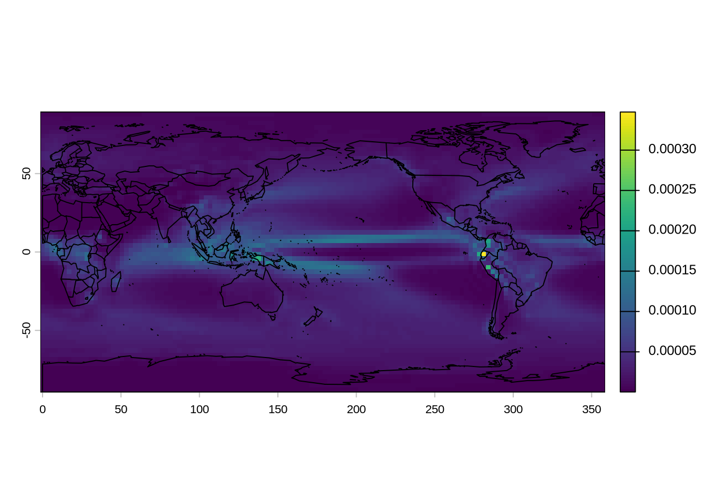
- The
terrapackage comes with different colors (?map.pal), e.g.
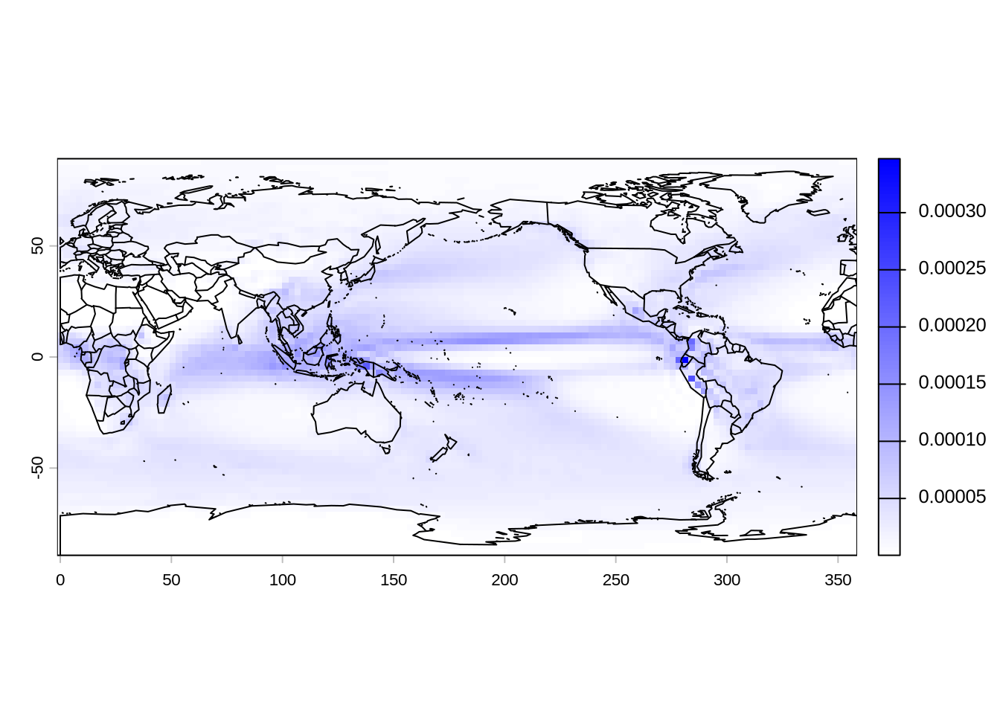
- Let’s plot how precipitation is projected to change between the 1995-2014 and 2081-2100 periods
- Download future precipitation projections:
# Get the URL for the SSP5-8.5 scenario
url <- "http://crd-esgf-drc.ec.gc.ca/thredds/fileServer/esgD_dataroot/AR6/CMIP6/ScenarioMIP/CCCma/CanESM5/ssp585/r10i1p1f1/Amon/pr/gn/v20190429/pr_Amon_CanESM5_ssp585_r10i1p1f1_gn_201501-210012.nc"
# Specify the file name and location where you want to save the file on your computer
file_name <- basename(url)
file_path <- "/global/home/hpcXXX/ENSC430/data"
# Call the download.file() function, passing in the URL and file name/location as arguments
download.file(url, paste(file_path, file_name, sep = ""), mode = "wb")- Load, process, and plot the data
# Read in data
hist <- rast("/global/teaching-project/sg51122000/shared_files/pr_Amon_CanESM5_historical_r10i1p1f1_gn_185001-201412.nc")
ssp5 <- rast("/global/teaching-project/sg51122000/shared_files/pr_Amon_CanESM5_ssp585_r10i1p1f1_gn_201501-210012.nc")
# Subset last 20 years from both files
n <- nlyr(hist) # nlyr = number of layers = number of time steps
hist <- subset(hist, (n - 239):n) # last 240 months = 20 years
n <- nlyr(ssp5) # number of layers = number of time steps
ssp5 <- subset(ssp5, (n - 239):n) # last 240 months = 20 years
delta <- mean(ssp5) - mean(hist)
# Let's change the unit of precipitation from kg m2 s-1 to kg m2 day-1
delta <- delta * 86400
my.col = map.pal("differences", n = 100)
plot(delta, col = my.col)
map("world2", add = TRUE)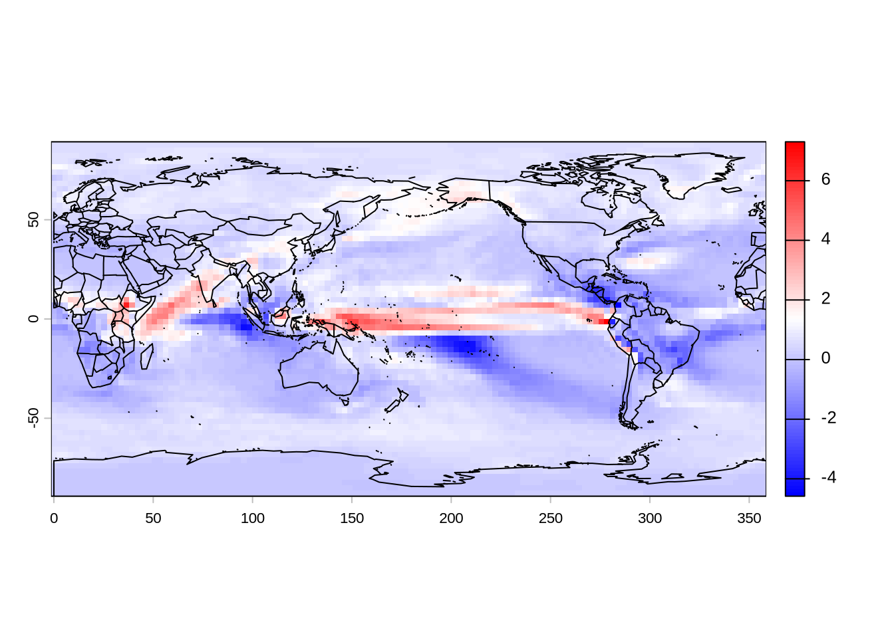
- Nice, but we want to have the divergence from red to blue at zero
- To achieve this, we need to define the breaks of the color palette
- Also, we will reverse the color, so that blue implies a projected increase in precipitation
# Set the desired range for the palette
min_val <- -8
max_val <- 8
# Define breaks to control the min and max of the palette
breaks <- seq(min_val, max_val, 2)
my.col <- rev(map.pal("differences", n = length(breaks) - 1))
plot(delta,
type = "continuous",
breaks = breaks,
col = my.col)
map("world2", add = TRUE)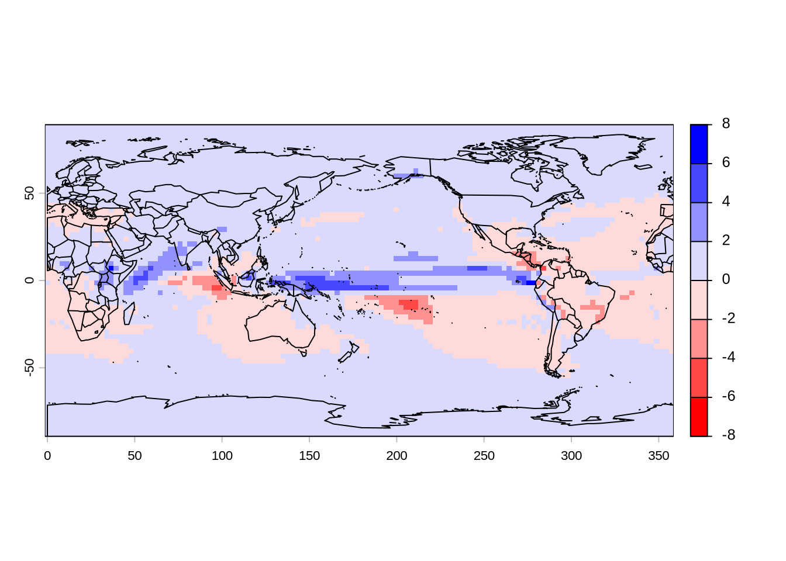
- Great, but are the projected changes statistically significant?
- Let’s apply a t-test for each grid cell and mark all grid cells where the projected change is statistically significant at the 0.05-level
- Before we do that, let’s practice how to do a t-test in the first place
# Create two random data sets
a <- runif(n = 100, min = 10, max = 20)
b <- runif(n = 100, min = 11, max = 21)
# Test whether the mean of both data sets is statistically different
pvalue <- t.test(x = a,
y = b,
alternative = c("two.sided"))$p.value
print(pvalue)## [1] 0.001720864Are the means statistically significant at the 0.05 level?
OK, let’s apply this to the projected change in precipitation
# Load data
hist <- rast("/global/teaching-project/sg51122000/shared_files/pr_Amon_CanESM5_historical_r10i1p1f1_gn_185001-201412.nc")
ssp5 <- rast("/global/teaching-project/sg51122000/shared_files/pr_Amon_CanESM5_ssp585_r10i1p1f1_gn_201501-210012.nc")
# Subset last 20 years from both files
n <- nlyr(hist) # nlyr = number of layers = number of time steps
hist <- subset(hist, (n - 239):n) # last 240 months = 20 years
n <- nlyr(ssp5) # number of layers = number of time steps
ssp5 <- subset(ssp5, (n - 239):n) # last 240 months = 20 years
# Define a function that performs a t-test and returns the p-value
ttest.fun <- function(x) {
n <- length(x) / 2
a <- x[1:n]
b <- x[(n + 1):(2 * n)]
pvalue <- t.test(x = a,
y = b,
alternative = c("two.sided"))$p.value
return(pvalue)
}
# Apply the t-test function to each cell in the raster stacks
pvalue.gridCell <- app(c(hist, ssp5), fun = ttest.fun)
# Plot the p-values raster
plot(pvalue.gridCell)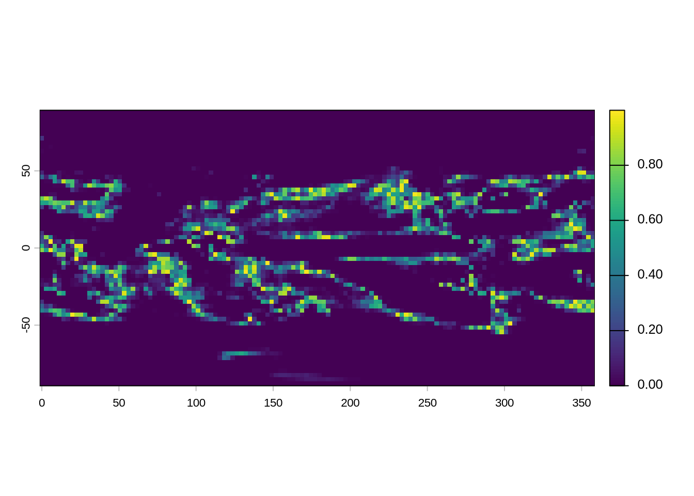
- Now let’s create a mask where all grid cells with statistically significant changes have no value (NA) while all others have a value of one
pvalue.gridCell[pvalue.gridCell<0.05] <- NA # statistically significant changes = NA
mask <- pvalue.gridCell - pvalue.gridCell + 1 # no statistically significant changes = 1- Great, now let’s plot our previous map that shows the projected change in precipitation and mask out all grid cells where the projected changes are not statistically significant
plot(
delta,
type = "continuous",
breaks = breaks,
col = my.col,
main = "Projected Changes in Annual Mean Precipitation \n from 1995-2014 to 2081-2100 (CanESM5, SSP5-8.5)",
font.main = 1
)
plot(mask,
add = TRUE,
legend = FALSE,
col = "white")
map("world2", add = TRUE)
mtext("mm per day", side = 4, line = 0.75)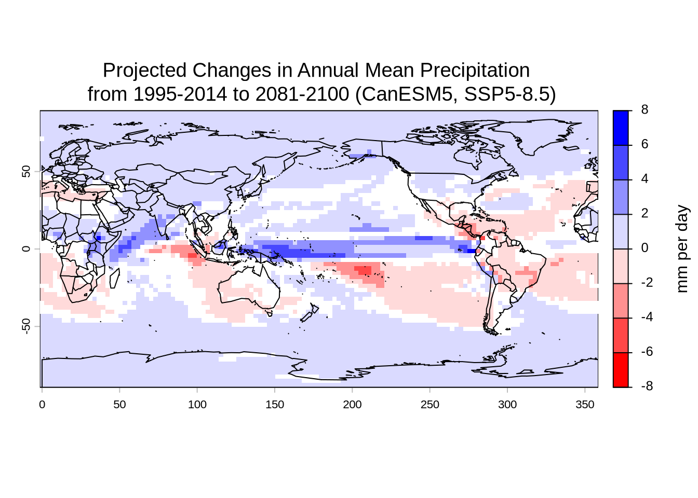
- Why do we assess the changes between two periods (1995-2014 and 2081-2100) rather than two years (e.g. 1995 and 2100)?
4.3 Climate Extremes
- Next we will use the ClimInd R-package to compute climate indices
- The package contains 138 standard climate indices at monthly, seasonal and annual resolution
- The indices characterize different aspects of the frequency, intensity and duration of extreme events
- Input variables consist of surface air temperature, precipitation, relative humidity, wind speed, cloudiness, solar radiation, and snow cover
- The package includes Temperature based indices (42), Precipitation based indices (22), Bioclimatic indices (21), Wind-based indices (5), Aridity/continentality indices (10), Snow-based indices (13), Cloud/radiation based indices (6), Drought indices (8), Fire indices (5), and Tourism indices (5)
- Let’s first practice a simple example using random data
# Generate random data with dates in month/day/year format
dates <- seq(as.Date("1990/1/1"), as.Date("1999/12/31"), "days")
dates <- format(dates, "%m/%d/%Y")
data <- runif(n=length(dates), min = 0, max = 5)
names(data) <- dates
# Let's pretend our data consists of daily precipitation in mm/day
# Let's compute consecutive dry days
my.cdd <- cdd(data, data_names = NULL, time.scale = "YEAR", na.rm = FALSE)
print(my.cdd)## 1990 1991 1992 1993 1994 1995 1996 1997 1998 1999
## 3 5 4 3 4 3 5 4 3 3- Great, now let’s apply our new skill to climate model data
- Download future daily temperature and precipitation data (CanESM5, SSP5-8.5, r10i1p1f1)
# Daily future precipitation
file_path <- "/global/home/hpcXXXX"
url <- "http://crd-esgf-drc.ec.gc.ca/thredds/fileServer/esgD_dataroot/AR6/CMIP6/ScenarioMIP/CCCma/CanESM5/ssp585/r10i1p1f1/day/pr/gn/v20190429/pr_day_CanESM5_ssp585_r10i1p1f1_gn_20150101-21001231.nc"
file_name <- basename(url)
download.file(url, paste(file_path, file_name, sep = ""), mode = "wb", timeout=300)
# Daily future temperature
url <- "http://crd-esgf-drc.ec.gc.ca/thredds/fileServer/esgD_dataroot/AR6/CMIP6/ScenarioMIP/CCCma/CanESM5/ssp585/r10i1p1f1/day/tas/gn/v20190429/tas_day_CanESM5_ssp585_r10i1p1f1_gn_20150101-21001231.nc"
file_name <- basename(url)
download.file(url, paste(file_path, file_name, sep = ""), mode = "wb")4.4 Consecutive Wet Days
- Compute consecutive dry days using the
cddfunction provided by the ClimInd R-package
# Load daily precipitation data
pr <- rast("/global/teaching-project/sg51122000/shared_files/pr_day_CanESM5_ssp585_r10i1p1f1_gn_20150101-21001231.nc")
# Let's subset four years for testing purposes
data <- subset(pr, 1:1460)
data <- data * 86400 # convert from kg m-2 s-1 to mm day-1
dates <- time(data)
dates <- format(dates, "%m/%d/%Y")
names(data) <- dates
# Define a function that calculated consecutive dry days
cdd.fun <- function(x) {
my.cdd <- cdd(data = x, time.scale = "YEAR", na.rm = FALSE)
return(my.cdd)
}
# Apply function to each gridcell
cdd.gridCell <- app(data, fun = cdd.fun)
# You now have a raster stack with one layer for each year
# print(cdd.gridCell)
# Let's plot the first year
my.col = rev(map.pal("magma", n=100))
firstLayer <- subset(cdd.gridCell, 1:1)
plot(firstLayer, col = my.col, main = "Consecutive Dry Days")
map("world2", add = TRUE)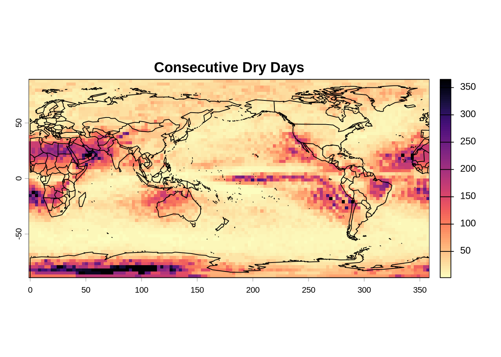
4.5 Consecutive Wet Days
- Compute consecutive wet days using the
cwdfunction provided by the ClimInd R-package - Use the script above as a template
- Your results should look similar to the Figure below
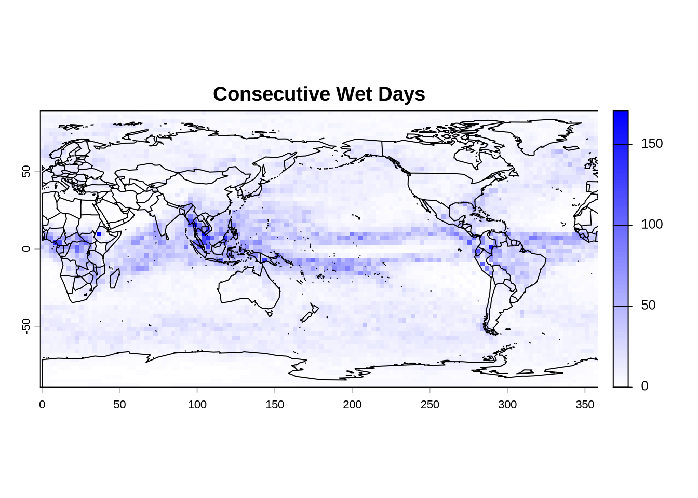
4.6 Linear trend of consecutive dry days
- Compute the linear trend in consecutive dry days from 2015 to 2100
- Before you start, let me briefly show you how you calculate the linear trend of a variable
# Sample time series data
time <- 1:10 # Independent variable (e.g., time in years)
temperature <- runif(n = length(time), min = 1, max = 3) * time
# Fit a linear model (trend)
trend_model <- lm(temperature ~ time)
# Extract the slope (coefficient for 'time')
slope <- coef(trend_model)["time"]
# Print the slope
print(slope)## time
## 2.014124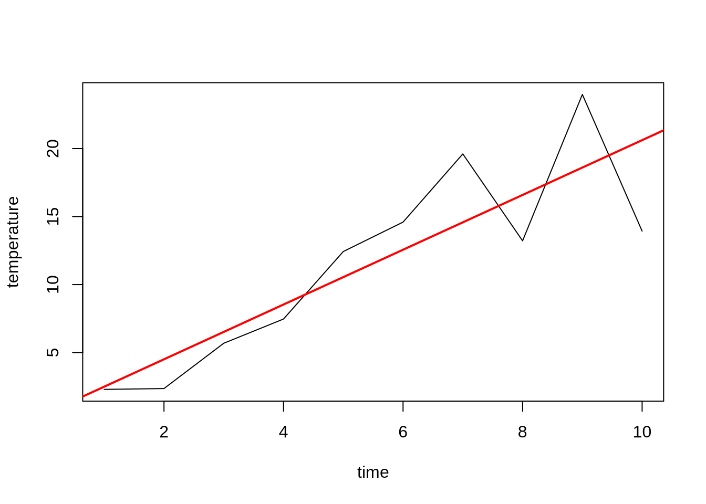
- Calculating climate extremes from daily data is computationally expensive
- To speed things up, let’s focus on one region
- Let’s first crop Australia and then perform the calculation for the region
# Load daily precipitation data
data <- rast("/global/teaching-project/sg51122000/shared_files/pr_day_CanESM5_ssp585_r10i1p1f1_gn_20150101-21001231.nc")
# Let's focus on Australia
data <- crop(x=data, y = c(100,170,-50,0))- Now, calculate the trend of consecutive dry days for each grid cell
- To achieve this, define a function that calculates the slope of a linear regression
- Apply this function to each grid cell
- Your results should look similar to the Figure below
# Load daily precipitation data
data <- rast("/global/teaching-project/sg51122000/shared_files/pr_day_CanESM5_ssp585_r10i1p1f1_gn_20150101-21001231.nc")
# Let's focus on Australia
data <- crop(x=data, y = c(100,170,-50,0))
data <- data * 86400 # convert from kg m-2 s-1 to mm day-1
dates <- time(data)
dates <- format(dates, "%m/%d/%Y")
names(data) <- dates
# Define a function that calculates consecutive dry days
cdd.fun <- function(x) {
my.cdd <- cdd(data = x, time.scale = "YEAR", na.rm = FALSE)
return(my.cdd)
}
# Apply function to each gridcell
cdd.gridCell <- app(data, fun = cdd.fun)
n <- nlyr(cdd.gridCell)
time <- seq(1, n, 1)
# Define a function that calculates a linear trend
trend.fun <- function(x) {
linear.model <- lm(x ~ time)
trend <- coef(linear.model)["time"]
return(trend)
}
# Apply function to each gridcell
trend <- app(cdd.gridCell, fun = trend.fun)
# Set the desired range for the palette
min_val <- -1
max_val <- 1
# Define breaks to control the min and max of the palette
breaks <- seq(min_val, max_val, 0.1)
my.col <- map.pal("differences", n = length(breaks) - 1)
plot(trend, col = my.col,
type = "continuous",
breaks = breaks,
main = "Change in Consecutive Dry Days per year (2015-2100)")
map("world2", add = TRUE)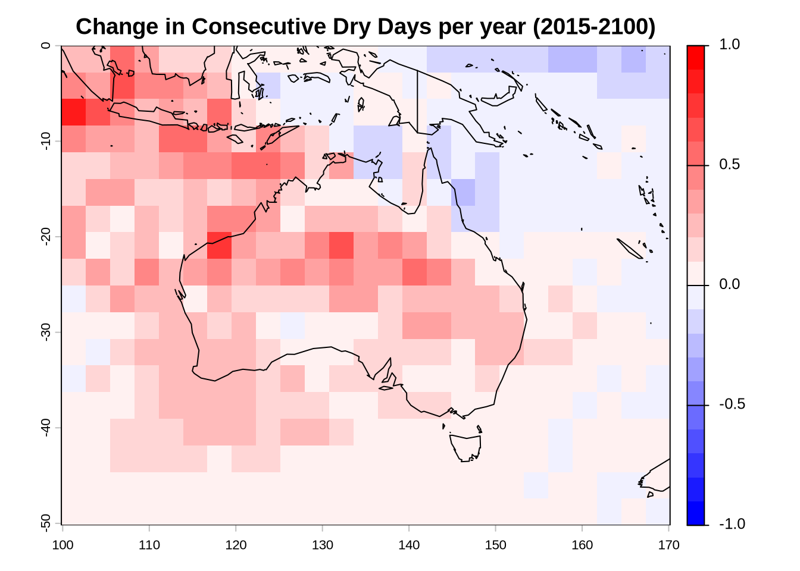
4.7 Consecutive dry days time series
- Next, plot a time series of consecutive dry days for the cropped region
- To do that, use the
globalfunction in theterrapackage - Your results should look like the Figure below
cdd.mean <- global(cdd.gridCell, mean, na.rm = TRUE)
years <- rownames(cdd.mean)
plot(x = years, y = cdd.mean$mean,
type = "l",
ylab = "CDD in Australia")
abline(trend_model, col="red", lwd=2)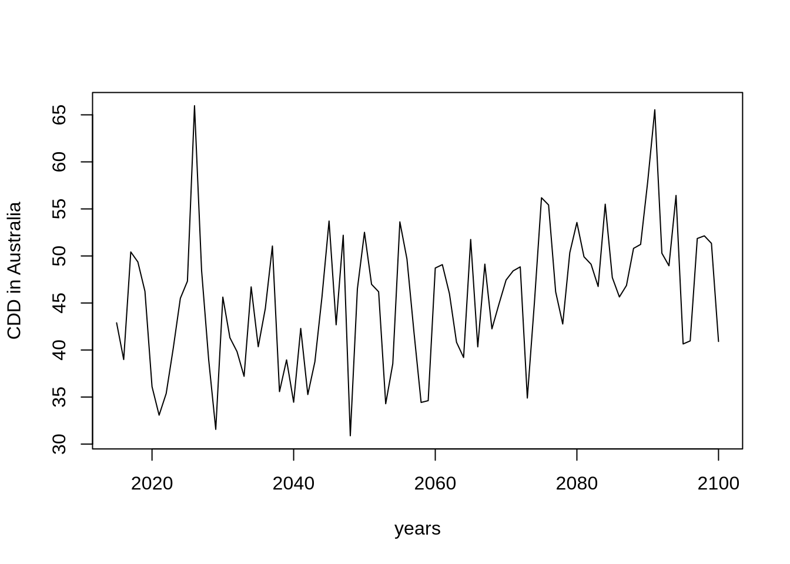
4.8 Analysis of an extreme climate index of your choice and region
- Repeat the previous two exercises but for a different region of the globe and a different climate index
- The climate indices are provided by the ClimInd package